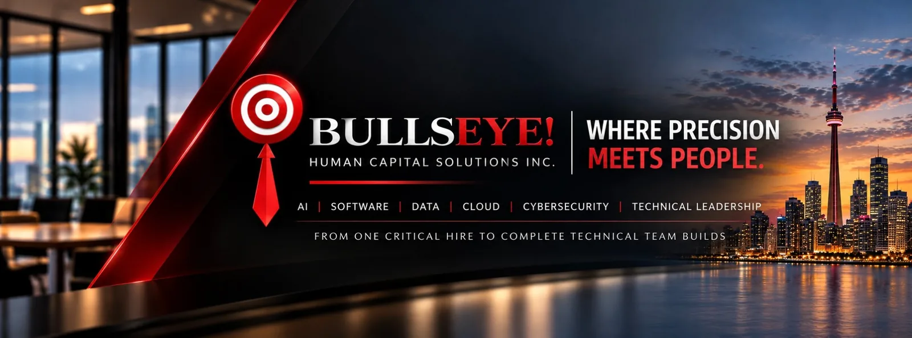

Build the team
that builds the company.
From one critical hire to an entire technical organization, BullsEye! helps founders and technology leaders recruit exceptional AI, software, data, infrastructure, cybersecurity and leadership talent across North America.

One search partner.
Senior attention from start to finish.
Every BullsEye! search is led directly by Jack Ponte.
No junior handoff. No volume-recruiting machine. No disappearing once the search starts.
You work directly with a recruiter who has spent more than 25 years identifying, evaluating and closing technical talent across North America.
Whether the need is one highly specialized hire or the buildout of an entire technical team, the search gets senior attention from beginning to end.
When the hire really matters.
Most companies can handle ordinary hiring. BullsEye! is most valuable when the search is difficult, consequential, urgent, highly specialized or simply too important to get wrong.
You need a foundational leader
CTO, CIO, VP Engineering, Head of AI, Head of Data or another leader who will shape the organization.
One search isn't getting done
The role has stayed open too long, the talent pool is narrow, or the usual recruiting channels are not producing the right people.
You are building a technical team
You are launching or scaling an engineering, AI, data, cloud, infrastructure or cybersecurity capability.
Your internal team needs extra reach
Your recruiting team can handle most hiring, but one or two specialized searches need deeper market access and focused ownership.
The wrong hire is too expensive
A poor technical hire can cost months of execution, leadership bandwidth, missed product milestones and significant money.
Build the team that moves the business forward.
From one pivotal technical hire to a complete engineering organization, the aim is to find people who can deliver in your environment — not just match a job description.
Technical talent.
From leadership to the people who build.
Technical Leadership
- CTO
- CIO
- VP Engineering
- VP Technology
- Head of Engineering
- Head of AI
- Head of Data
- Engineering Directors
- Technical Product Leadership
AI & Machine Learning
- Applied AI
- Machine Learning
- LLM / Agentic Systems
- AI Engineering
- ML Infrastructure
- AI Platform
- Research Engineering
Data Engineering & Analytics
- Data Engineers
- Analytics Engineers
- Data Scientists
- Data Platforms
- Data Architecture
- Business Intelligence
- Data Leadership
Software & Product Engineering
- Founding Engineers
- Staff Engineers
- Principal Engineers
- Backend
- Frontend
- Full Stack
- Platform Engineering
- Developer Infrastructure
- Product Engineering
Cloud & Infrastructure
- Cloud Engineering
- DevOps
- SRE
- Infrastructure
- Distributed Systems
- Cloud Architecture
Cybersecurity & OT Security
- OT / ICS / SCADA Security
- Security Engineering
- Cloud Security
- Application Security
- Security Operations
- Security Architecture
- Security Leadership
Where precision meets people.
Better search starts with understanding the work, the people and what success actually looks like.
A search process built around judgment, not volume.
Understand the real hiring problem
Get clear on what the person must accomplish, why the hire matters and what separates a strong candidate from a merely qualified one.
Map the right talent market
Go beyond applicants and obvious LinkedIn results to identify relevant people across the broader North American market.
Qualify for fit, not keywords
Evaluate technical relevance, career shape, motivation, environment fit and the ability to deliver what the company actually needs.
Own the search through close
Stay involved through interviews, feedback, offer dynamics and closing.
BullsEye!'s proprietary recruiting intelligence system supports deeper market mapping, evidence-based candidate assessment and more precise search execution — while senior judgment stays at the center of every decision.
Your career deserves the same precision as the search.
Whether you're an emerging technical professional, a senior engineer, a specialist or an executive, BullsEye! approaches every conversation with the same standard: understand the person before discussing the opportunity.
I don't believe in sending people into hiring processes simply because a few keywords match a job description. I take the time to understand what you've built, where you've had the greatest impact, what you're looking for next and whether the opportunity genuinely makes sense for you.
Relevant conversations
I contact you because there is a credible reason to believe the opportunity aligns with your experience — not because a search string found a keyword.
Straight answers
You'll understand the role, the company, the expectations and the process as clearly as possible before investing your time.
Respect for your time
No unnecessary screening from me, no pushing opportunities that clearly aren't right and no treating your career like inventory.
Technical understanding
After more than 25 years recruiting technology professionals and leaders, the conversation goes beyond job titles and résumé keywords.
Representation with precision
When I introduce you to a client, I want them to understand the experience and capabilities that make you relevant to the problem they're trying to solve.
Professional follow-through
I stay involved through the process — from the first conversation through interviews, feedback, offer dynamics and close.
The objective isn't to put more people into hiring processes. It's to put the right people into the right conversations.
25+ years of technical recruiting judgment.
Jack Ponte is the founder of BullsEye! Human Capital Solutions Inc. and has spent more than 25 years recruiting technology professionals and leaders.
His experience spans software engineering, infrastructure, cloud, data, AI, cybersecurity and technical leadership across startups, growth companies and established organizations.
BullsEye! was built around a simple idea: important searches deserve direct senior attention.
Clients work with Jack personally from the initial hiring conversation through search strategy, candidate evaluation and close — creating continuity, accountability and judgment throughout the entire search.
What leaders and partners say about working with Jack.
Real words from people who have trusted BullsEye! to build critical teams and leadership hires.
“Jack has consistently proven to be an invaluable asset in helping us fill some of the most challenging and unique technology roles. His ability to understand the specific needs of our business, combined with his talent for finding the right candidates for highly specialized positions, is truly impressive.”
Alejandro NavarroPresident / CIO / CTO / COO“Jack Ponte was instrumental in helping us recruit top engineering talent for our cybersecurity startup. He quickly understood the requirements for complex roles and was dedicated to finding the perfect fit, even for the most challenging positions. Thanks to his efforts, we built a high-performing engineering team.”
Kevin OertonCEO & Co-Founder“Jack is one of the best IT recruiters I have worked with. He takes the time to get to know the company’s culture, the role in detail and conducts extensive screening. By the time we see resumes, the first round of interviews is essentially complete, saving us a great deal of time.”
Adela DoyleGeneral Manager & Head of Global Recruitment“Jack’s amazing – he takes the time to really understand your requirements and then goes out and finds the best people to fit your needs. Easily the best recruiter I’ve ever worked with.”
Don KittleVP Engineering“Jack is the recruiter that you dream of finding if you are part of a growing organization. He finds good people and finds them fast – no combing through hundreds of resumes to find just the right person. Great skills with great references are the only people he delivers.”
Ilana SpronglExecutive & Leadership Coach“One of the most driven and ethical recruiters I’ve come across. Jack takes the time to truly understand both the technical and cultural needs of each role, and he approaches recruitment as a partnership, not a transaction.”
Sanjay ArasaratnamHead of Customer SuccessTechnical leadership and hands-on expertise.
A selection of completed technical and technology leadership placements. Company descriptions are anonymized to respect client confidentiality.
Chief Technology Officer (CTO)
Education nonprofit
Chief Technology Officer (CTO)
Financial technology company
Chief Technology Officer (CTO)
Information services company
VP Technology
Technology company
Systems Architect
Enterprise software company
Engineering Team Lead
Enterprise software company
Lead Engineer
Payments technology company
Senior Back-End Development Lead
Cloud software company
Infrastructure Team Lead
Cloud software company
DevOps Lead
Software company
Companies Jack has recruited for.
Selected organizations Jack has supported across technology, software, fintech, media, cybersecurity and technical leadership over more than 25 years.
The right hire can change the trajectory of a company.
If you're building a technical team, replacing a critical leader or facing a difficult search, tell Jack the role, the technical environment and what's making the hire challenging. Start with a direct conversation about whether BullsEye! can help.
Direct email: jponte@bullseyehc.com